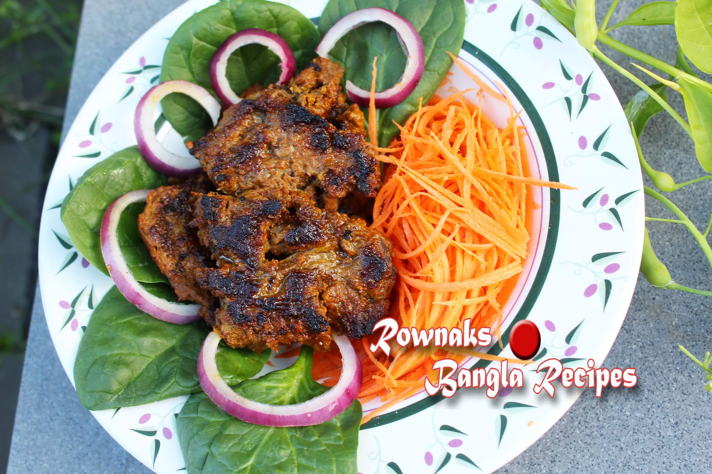

Beef Chop In Bangladeshi Style

What should I say? Beef Chop In Bangladeshi Style/ গরুর চাপ is a simple recipe, just need bit of patience to let marinate the meat for enough time. You can marinate the meat up to 2days in your refrigerator. So you can prepare the meat and just fry whenever you want to have. I like to cook it in mustard oil, but you can use vegetable oil and brush with ghee too for more flavour. Just remember to flatten meat to quarter inch which will make meat more tender, easy to marinate and easy to cook.
Ingredients:
- Boneless beef half kg
- Onion paste 1 table spoon
- Chili powder 1 teaspoon or to taste
- Ginger paste half table spoon
- Garlic paste half table spoon
- Lemon juice 1 teaspoon
- Roasted cumin powder half teaspoon
- Black pepper crushed half teaspoon
- Greek yogurt 2 table spoons
- Saffron imitation
- Garam masala powder 1 teaspoon
- Green pawpaw with skin 2 teaspoons(or any store meat tenderizer)
- Oil 3 tablespoons(vegetable oil / mustard oil/ vegetable oil+ ghee)
- Salt to taste
How to make:
- Cut meat 1 inch thick slice, wash and drain water. Now using meat tenderizer hammer flatten the meat into thin slice(Quarter inch thick).
- Marinate meat with all ingredients except oil and keep it aside for at least 3 hours.
- After 3 hours add 2 tablespoon oil in meat and mix well. Then heat non stick pan or grill pan and when pan is ready, fry chop on medium heat.
- When one side is done, turn it and brush oil. When both sides are done, brush oil and remove from pan.
- Enjoy melting in mouth Beef Chop in Bangladeshi Style with Paratha, Naan or Luchi.
Home